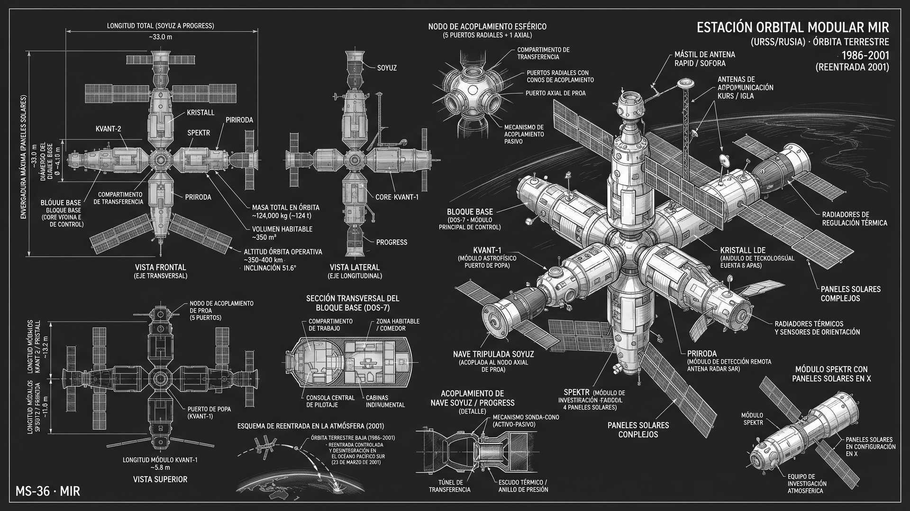

Mir

Fue la primera estación espacial modular y por ella pasaron 104 cosmonautas y astronautas de 13 países. En ella se cumplieron los 437 días seguidos de Valeri Polyakov, récord que sigue vigente.
Desorbitación controlada el 23 de marzo de 2001: el carguero Progress M1-5 encendió tres veces; la estación entró a unas 62 millas de altitud y empezó a desintegrarse hacia las 50, sobre el Pacífico sur. Personas: Norman Thagard, Shannon Lucid, Frank Culbertson
Lo que hizo
- Quince años arriba — Pasé 15 años en órbita, tres veces mi vida prevista: 86.331 órbitas y 2.200 millones de millas recorridas, a unas 250 millas de altura y 17.885 mph.
- Casa de muchos — Por mí pasaron 104 cosmonautas y astronautas de 13 países y agencias espaciales. En el espacio cultivé la primera cosecha de trigo de semilla a semilla.
- El último empujón — El Progress M43 me subió de órbita en octubre de 2000 y el M1-5 llegó en enero de 2001 con 5.900 libras de propelente. Sus tres encendidos del 23 de marzo de 2001 me hundieron en el Pacífico sur, a la vista de Fiyi.
Modelo 3D, chat y cómic, en tres idiomas
Fuentes
- www.nasa.gov/history/20-years-ago-space-station-mir-reenters-earths-atmosphere/
- www.nasa.gov/history/SP-4225/mir/mir.htm
Ver el índice completo · Proyecto del NASA Space Apps Challenge 2026. Contenido con fuentes citadas.